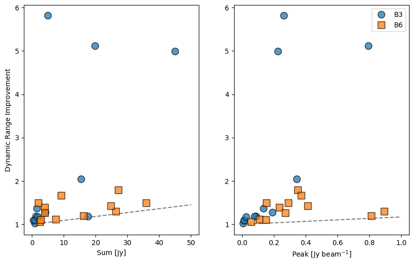
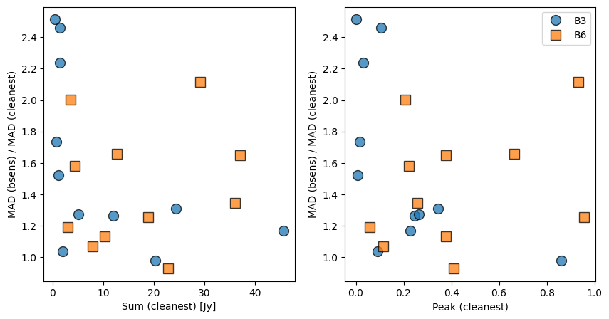

ALMA-IMF data update
With the data reduction team:
Timea Csengeri, Roberto Galván-Madrid, Hongli Liu, Yohan Pouteau,
Andrés Guzman, Fernando Olguin, Fabien Louvet, Ana Lopez-Sepulcre,
Nichol Cunningham, Manuel Fernández, Tapas Baug
Slides available at https://keflavich.github.io/talks/almaimf_meeting.html
Very quick summary
- Clean-continuum, self-calibrated, 12m-only data are ready for use
- "Dirty" continuum (contains line contamination) and 7m+12m combined data are mostly ready
- Line data first-pass cubes are undergoing QA
Data Reduction Team:
Continuum Deliveries:
- Hongli Liu (G353)
- Fabien Louvet (G12.80)
- Timea Csengeri (G351.77, G328.25, G337.92)
- Andrés Guzman (G10.62)
- Roberto Galván-Madrid (G333.60)
- Fernando Olguin (G327, G338 B3)
- Patricio Sanhueza (G338 B6)
- Ana Lopez-Sepulcre (G008.67)
- Nichol Cunningham (G008.67)
- Yohan Pouteau (W43-MM1, W43-MM2, W43-MM3)
- Adam Ginsburg (W51-E, W51-IRS2)
Line Inspection:
- Manuel Fernández (N2H+)
- Hongli Liu (12CO, C18O)
- Roberto Galván-Madrid (H41α)
- Tapas Baug (H2CO)
Self-Calibration
Before self-calibration, data suffer from severe dynamic range limitations.Self-Calibration: process
- Mosaic image created
- Image is cleaned within a custom mask
- Each pointing in the mosaic has gain solutions determined
- Those pointings with S/N > 5 for all antennae are kept and used to calibrate remainder
- Repeat, each time cleaning more deeply
Self-Calibration: process
Image Residual ModelSelf-Calibration: effect
Self-Calibration: Summary
It works, and works well, but requires care in cleaning.
Substantial dynamic range improvements achieved for most fields.
Substantial dynamic range improvements achieved for most fields.
BSENS and Lines
We excluded lines to create "cleanest" continuum maps based on the defaultfindContinuum
script in the pipeline.
Continuum Vs Lines
Continuum selection doesn't always work. W51-E, for example, is a forest - the peak spectrum shows emission lines everywhereContinuum Vs Lines
Most regions are better behaved overallBSENS has improved sensitivity
BSENS has improved sensitivity
Most of the improvement is in the faintest regions:This implies the brighter regions are dynamic-range-limited, not bandwidth-limited.
BSENS has improved sensitivity
G351.77 B3 is one of the best examples, with substantially improved noise.BSENS has improved sensitivity
Some of the excesses are substantial, and pretty interesting lookingBSENS has improved sensitivity
Some of the excesses are substantial, and pretty interesting lookingBSENS has improved sensitivity
Band 6 has the most "contamination"BSENS has improved sensitivity
Band 6 has the most "contamination"7m + 12m combination
- Not as advanced as 12m-only
- Self-calibration does not succeed in many cases
- 7m+12m images are generally more noisy
- There are some successes, but generally 7m+12m data should not be used in the current iteration
7m + 12m combination

7m + 12m combination
 Not bad, but is it adding interesting information?
Not bad, but is it adding interesting information?
Description of the Data
- Filenames:
{field}_{uid}_continuum_merged_{bsens?}_{configuration}_{robust}_{selfcal}{suffix}
E.g.:
W51-E_B3_uid___A001_X1296_X10b_continuum_merged_12M_robust0_selfcal6_finaliter.image.tt0.fits - Fields:
G008.67 G337.92 W43-MM3 G328.25 G351.77 G012.80 G327.29 W43-MM1 G010.62 W51-IRS2 W43-MM2 G333.60 G338.93 W51-E G353.41 - Configuration:
12m, 7m, 7m12m - Robust: -2, 0, 2